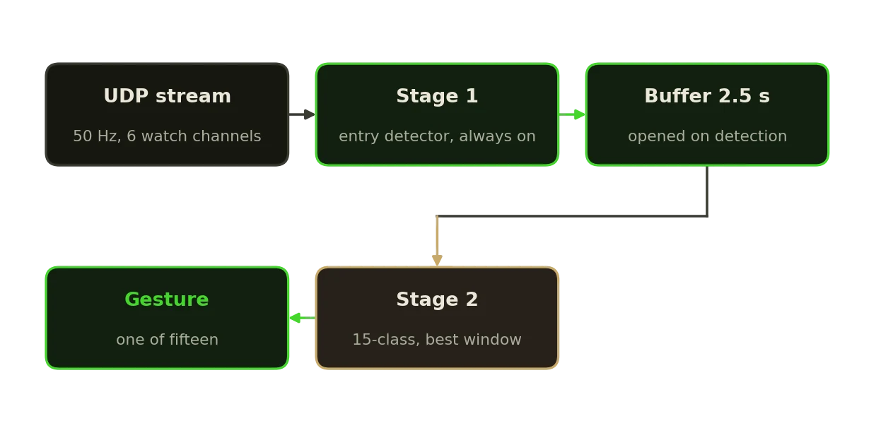
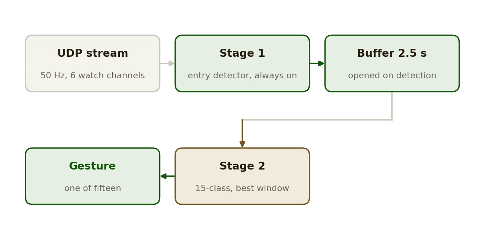

Research · 2025
IMU Gesture Classifier
Fifteen wrist gestures, live, from six channels of a watch, split into when and which.
AIIMUPython


What it does
- Recognizes fifteen hand gestures from a smartwatch in real time, from six channels, linear acceleration and angular rate, at 50 Hz over UDP.
- Two stages: a small binary entry detector runs on every window and decides when a gesture has started; only then does a fifteen-class model run on the 2.5 s that follow.
- Six architectures in the grid, MLP, LSTM, GRU, TCN, 1D CNN and CNN-LSTM. Both training scripts write the full grid, not the winner alone.
- Deployed pair: LSTM entry detection and TCN classification, the models that drive IVO's gesture commands.
How it works
- A detection opens a 2.5 s buffer; the classifier runs over several windows inside it and the highest-confidence result wins, so the gesture need not start exactly where the detector fired.
- After a recognized gesture the detector is suppressed for a configurable interval, two seconds by default, so one movement cannot produce a burst of detections.
- Fixed protocol: 70/15/15 split, seed 42, early stopping after 15 epochs without improvement, accuracy and macro F1 with a confusion matrix. No benchmark numbers are committed, so none are claimed.
Data
- Recordings, pretrained checkpoints and training reports are on Google Drive, linked from the README.
- Eight tests run without recordings or a checkpoint.
Facts
- Year
- 2025
- Status
- Public, release v1.0.0
- Stack
- Python, PyTorch, NumPy
- Input
- Six watch channels at 50 Hz over UDP